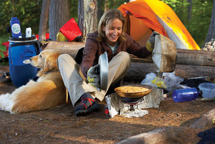

Module 1—Thinking Energy
 Module 1: Lesson 5 Assignment
Module 1: Lesson 5 Assignment
Evaluating Different Fuels

© 2008 Jupiterimages Corporation
How would what you know about molar enthalpy apply to choosing a fuel to burn if you were on an ecotour? Are there other aspects to consider in your choice of fuel?
Retrieve your copy of the Module 1: Lesson 5 Assignment that you saved to your computer earlier in this lesson. Complete Part 2—Evaluating Different Fuels. You will receive information later in the lesson on when to submit your work to your teacher.
 Read
Read
Reviews and summaries are an important part of learning. Read the “Summary” section on page 493 of the textbook.
 Try This
Try This
To review what you have learned in the first five lessons in Module 1, try one of the following learning strategies:
- Review the concept map or graphic organizer you have been adding
to throughout Module 1. Remember to use linking statements to explain
how you understand the concepts to be connected.
- Use the Module 1 Concept Organizer as a starting point for
another style of summarixing information (e.g., a list of key words, a
concept map, a flow chart, or an outline).
- Review the lesson glossaries by covering up the definitions and
defining each term in your own words.
- Create test questions and answers on flash cards.